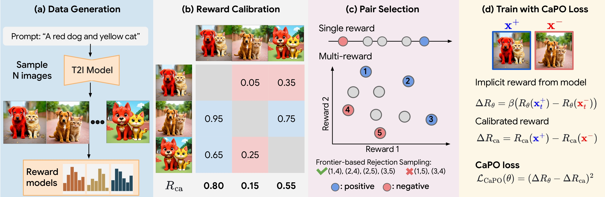

Proposed Method
(a) Synthetic data generation
Instead of using human-annotated preference dataset, we generate group of images from prompt, and compute reward signals for each reward models such as image aesthetic score (VILA), image-text alignment score (VQAscore), and human preference score (MPS). We find that using scaling the prompt and the number of images are crucial for performance gain, where we use 100K prompts from DiffusionDB and generate 16 images per prompt.
(b) Reward Calibration
Instead of using the reward model directly, we calibrate the reward model to approximate the general preference by computing the expected win-rate against the samples generated by the pretrained models. Specifically, we compute the approximate win-rate by using Bradley-Terry model to compute the statistics of group. Note that this calibration has following advantages: (1) it allows us to bound the range of scores into [0,1], which helps the balanced optimization by lowering the variance within reward scores. (2) the calibrated rewards act as a global metric where higher calibrated reward represents better performance across different prompts, whereas the higher reward score itself does not necessarily means the better model.
(c) Pair Selection
For single reward case, it is straightforward to select the pairs with the highest difference in calibrated rewards. On the other hand, for multi-reward case, we need to select the pairs that are Pareto optimal in the multi-dimensional space. We propose a frontier-based pair selection method that effectively manages the multi-preference distribution by selecting pairs from Pareto frontiers. Specifically, we compute the Pareto frontiers of the calibrated rewards, and select the positives (i.e., non-dominated set) from the upper frontier and negatives (i.e., dominated set) from the lower frontier. After removing the potential duplicate, we randomly choose the pairs from the selected positives and negatives for each training step.
(d) Train with CaPO Loss
We introduce a calibrated preference optimization (CaPO) loss to align the diffusion models with the calibrated rewards. Given calibrated rewards of a pair, we use regression loss to fine-tune diffusion models to match the difference between calibrated rewards of a selected pair. Specifically, we match the difference of implicit rewards (i.e., the log-ratio between the fine-tuning and pretrained model) to match the difference of calibrated rewards. Compared to DPO and IPO, which leverage the discrete preference label for training, our objective accounts the difference of calibrated rewards, which allows us to optimize the model without suffering from overfitting.